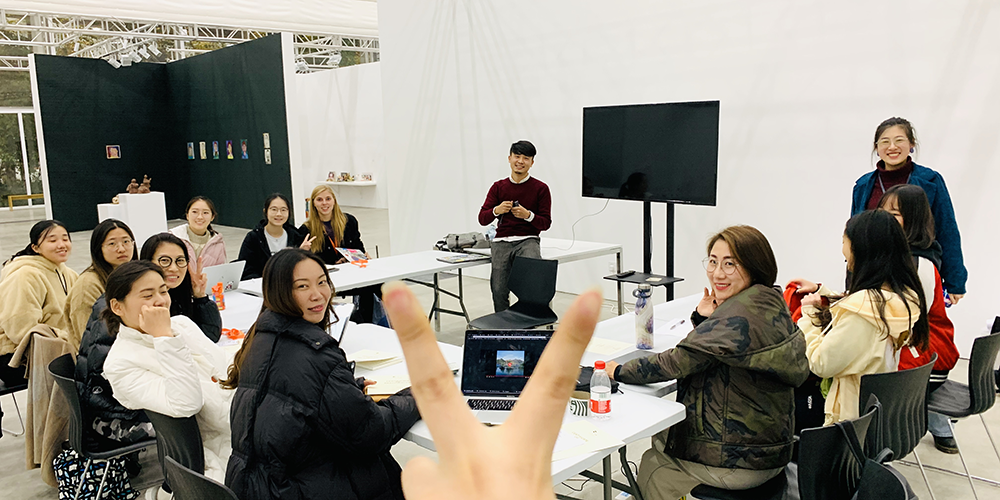

Teaching Philosophy
(updated 11/2019)

* photo credit to Liwa. “Create with AI” workshop at Future Lab, West Bund Art Center, Shanghai.
If I use one word to summarize my teaching philosophy, it's practice. I believe practice is the key to both teach and learn creative art and technology. I teach what I practice. I summarize and include my in-field successful or temporary failed attempts in the syllabus and keep students updated with the most current trends and state-of-art technology advancements. I encourage and guide students towards self-directed projects. I engage them to develop their concept and technical skills, and build individual artwork as practices.
I have been developing and teaching undergraduate and graduate creative art and technology curriculum for the past four years. I have taught Artificial Intelligence (AI) Arts, Computational Arts and Interactive Media Arts (IMA) in various institutions including IMA Program at NYU Shanghai, Institute of Cultural and Creative Industry (ICCI) at Shanghai Jiao Tong University (USC-SJTU, jointly established with University of Southern California), School of Professional Studies (NYUSPS) at NYU Shanghai and New Media Program at WPP School of Marketing and Communications, Shanghai (WPP School).
Most recently, I developed and have been teaching courses on Machine Learning for Creativity and Art. In these courses, I integrate my artist practice experiences of producing artwork with AI and initialized two advanced courses. I have enhanced these courses using supportive philosophy, critical thinking, active methodology, and emerging technology. Through a research-based Course Design studio, I created two new courses: Artificial Intelligence Arts, and Interactive Machine Learning. I am also interested in fundamental computational arts topics involves creative programming and emerging technologies. As an adjunct instructor, I developed and taught Digital Art track of Innovation, Creativity and Entrepreneurship course. In this master program module, I introduced digital art basics and taught students creative coding along with other interactive technologies. Students with no previous knowledge were able to develop and build interactive art installations. All student projects were curated as an open art exhibition: The Journey to Communication.
I have been drawn to creative art and technology education because it aligns with my expressivity and rich possibilities. Although a challenge, I enjoy the topics' broad and indistinct scope, which makes it demanding to teach and learn. To meet this challenge, I apply my professional experiences, skills and disposition to bring to live in an authentic way the essential conceptual and technical skills. Taking artistic concept and vision as priorities, I commit to engage students with a fusion of art, design, programming, software and hardware building. As students gain artistic and technical proficiency and intrinsic motivation, I model my practice in a complete framework of art project through hands on - minds on processes on state-of-art examples. My plan is to introduce my projects and demonstrate the progressive attempts with sectional achievements and/or failed events, which are temporary and act as a guide for next steps. Students can refer to and then progressively build their application of art project development. I believe in self-directed projects and encourage students to develop their concept into the final project. When working with personal ideas and interests, students are more intrinsically motivated to enhance their technical skills, develop art statement and gain project experiences.
I particularly enjoy helping students or (I prefer to call them) young artist. Through sharpening their developing skills in both art concepts and technical implementation, I find it delightful to witness the progressive achievements in their career. When seeing those young artists eventually can conduct individual art practice, I feel more connected to evolving fields and always appreciate being a part of this greatness. Following my passion in the practice of art and technology education, I have been leading the digital track of High School Academy (HSA) Program at NYUSPS at NYU Shanghai and also helped to found the New Media Program at WPP School and lead interactive media art courses developments there. In the four years' services, focusing on explaining the topic in a comprehensive and beginner-friendly way, I adopted several pedagogical techniques, such as Live Coding and Interactive Syllabus. I have applied these methods in many HSA and WPP courses, such as Introduction to Creative Coding; Programming Web Design; Video Game Design; and Make Design Interact.
Programming is an essential approach to media art practices. I am interested in engaging students in programming for their artistic purposes. With open source languages such as Processing, p5js, ml5js, and python, I dedicate to enhance students with minimal background on the topic with the ability to write custom software for composing arts. In general, programming has a steep learning curve, especially for beginner students in art and design discipline. Art students usually find logic - the core and essence of programming too strict, abstract (not visually obvious) and even boring to learn. There are many cases where students in early studies meet but cannot even locate the problem, thus give up frustratingly. Or they learnt to write program but do not know how to apply to art practice and immediately lost interest. To overcome this challenge, I live code in-class, with real-time demonstration and visual examples, so to provide visual reference to the abstract codes and logic, and to explain technical concepts more attractively. Students will follow the live coding with hands-on practices and can access immediate assistance. However, the diverse student group usually learns at different peace, the confused students are usually too shy to stop the class and ask questions. Thus, I created an Interactive Syllabus, which allows students immediate feedback and helps me to follow students' progress and adapt class content and peace responsively. With live coding and interactive syllabus, I help students especially beginners to surpass the difficulties in beginning programming study and to accelerate the learning process and hone a solid foundation for future explorations.
While teaching, I am also an active artist in the field and strive to guide young minds towards becoming professionals. Through my active practice with emerging medium to push the edges of both art and technology, I bring state-of-art applications and practical experiences to the classroom. I enjoy sharing and teaching, and appreciate their positive influences on the general field as well as my personal practices. I particularly enjoy working with these young artists, help to build their projects and assist to conduct their art practices and research. I believe it's a win-win move for both learners and the teacher facing the rapidly changing discipline, and can also shape and lead to a diverse practical field and a vivid art market.